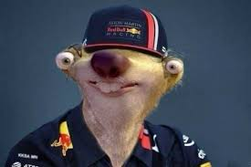
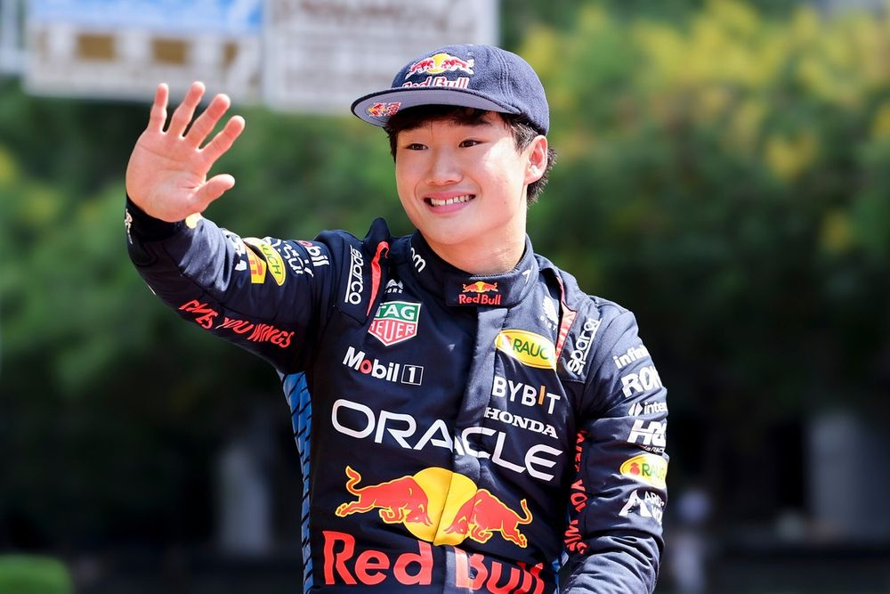

RedBull Racing

Oracle Red Bull Racing
Team Principle & CEO: Christian Horner
Drivers: Max Verstappen, Yuki Tsunoda
Car: RB21
Reserve Drivers: TBC
Academy Drivers: Chloe Chambers, Alisha Palmowski, Pepe Marti, Oliver Goethe, Arvid Lindblad, Nikola Tsolov, Tim Tramnitz
Max Verstappen
Verstappen joined formula 1 as a RedBull junior and raced for Toro Rosso before moving to the main team were he has dominated for the last 4 years most notablly 2023 where he won 19 out of 21 races. He is arguable one of if not the best driver of all time and has the admiration of many great drivers like fellow racer and 2 time world champion Fernando Alonso. This year he is the only non-McLaren driver to win a race and has had 3 poles despite the car and team that ae currently holding him back.
Race Engineer: Gianpiero Lambiase
Yuki Tsunoda
Tsunoda moved up from Racing Bulls to join the main team for the third round in his home country, Japan, after Liam Lawson failed to perform. He had benn in the junior team for some years and was expected to be promoted for the start of the season. He so far has scored 3 points for the team which is far from Verstappen's 99 but even Vertappen has been struggling with the car and its new to him so hopefully he can get to grips with it and hopefully he can start performing nearer to Vertappen.
Race Engineer: Ernesto Desiderio